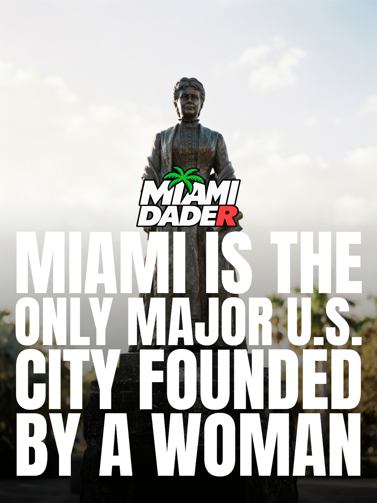

Wednesday, October 7. Swipe to see each one.
Property tax relief remains a crucial focus across the Miami area. While tax discussions often peak during the campaign season, effective relief measures must continue to function properly long after Election Day has passed. Local homeowners and community members require dependable tax policies that do not fade once voting concludes. For real relief to succeed in our community, it has to deliver lasting results that stay workable well beyond election season.
Source: Miami’s Community News. Check the facts before you post.
Miami Dade College's Miami Fashion Institute is joining forces with Istituto Marangoni Miami. The two local institutions are set to announce an upcoming academic partnership. This new collaboration connects Miami Dade College and Istituto Marangoni Miami in a shared academic venture. Further details regarding the official partnership between Miami Dade College's Miami Fashion Institute and Istituto Marangoni Miami are expected to be announced.
Source: MDC News. Check the facts before you post.
Miami faces more adjustments along the offensive front following an injury to Max Buchanan. The setback directly impacts the squad, forcing the team to reshuffle its lineup once again.
Buchanan's injury requires Miami to implement further changes across the offensive line. As the team works through Buchanan being out, additional modifications are now necessary up front.
Lineup continuity remains a key challenge for Miami as the offensive front prepares to make these forced changes and navigate Buchanan's absence.
Source: Canes Warning. Check the facts before you post.

Miami holds a unique standing in the nation as the only major U.S. city founded by a woman. Julia Tuttle founded Miami and is recognized as the mother of Miami. Her vision led directly to the establishment of the city we know today. Miami was officially incorporated on July 28, 1896. At the time of its official incorporation, the city had a population of just over 300. Julia Tuttle is called the mother of Miami, and our home remains the only major U.S. city founded by a woman.
From your fact library.